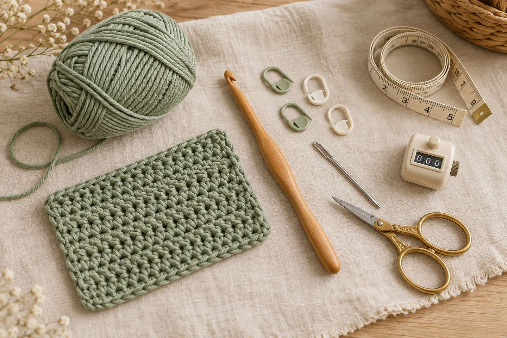
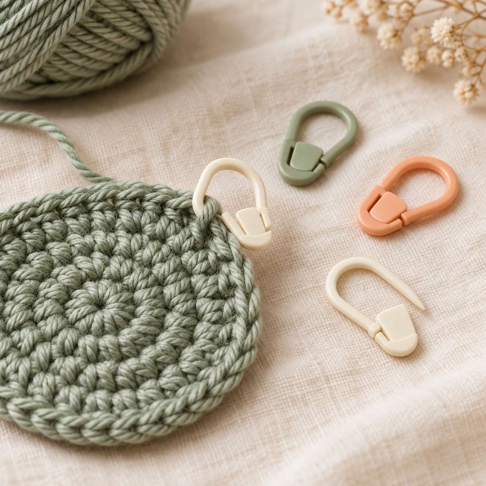
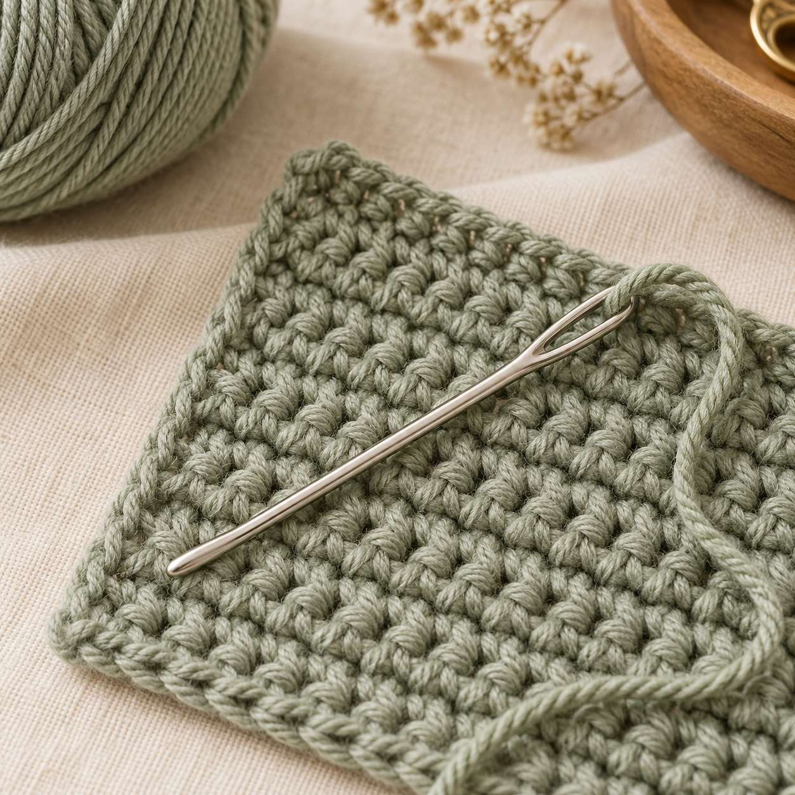
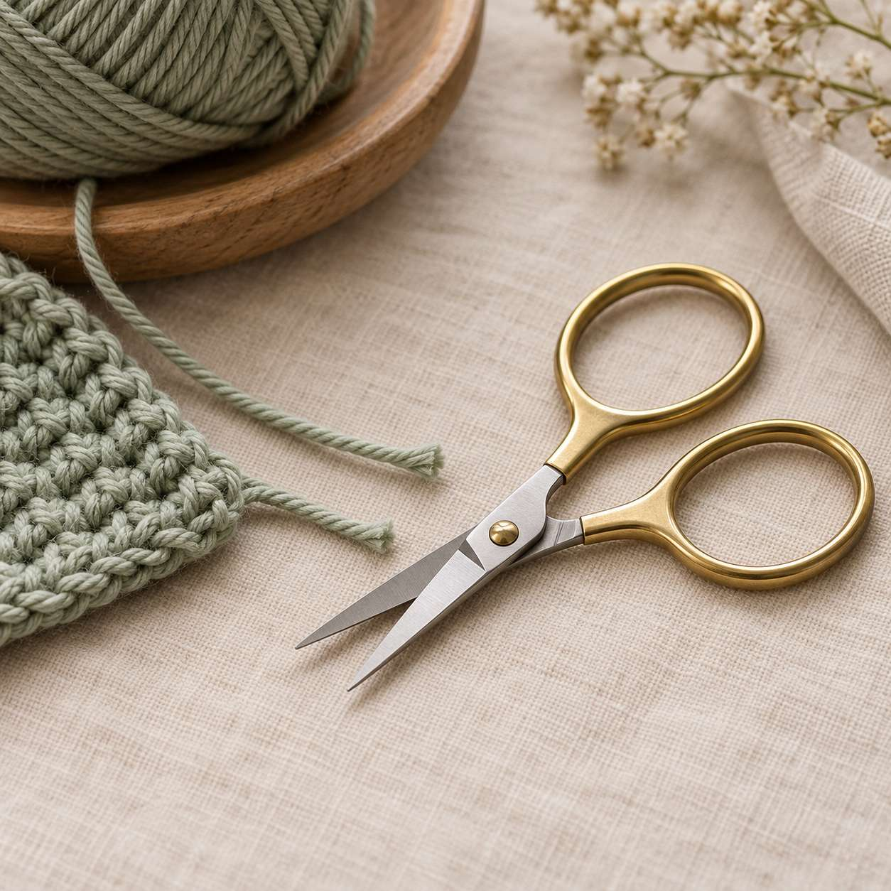
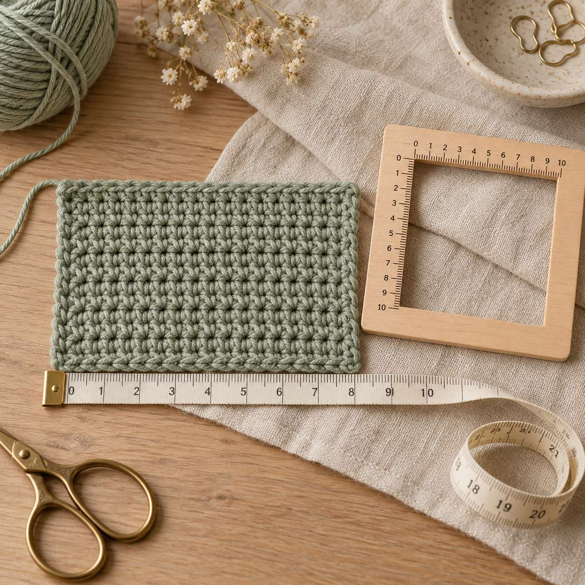
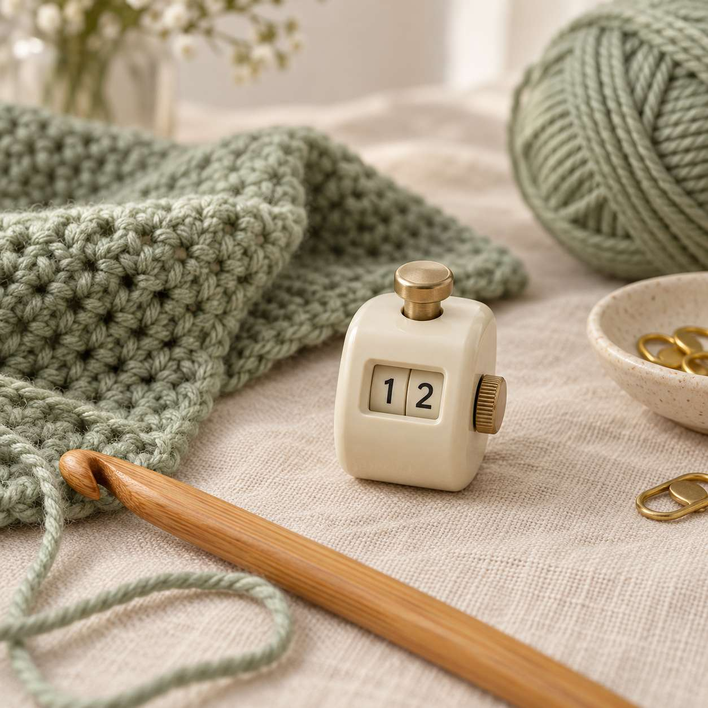
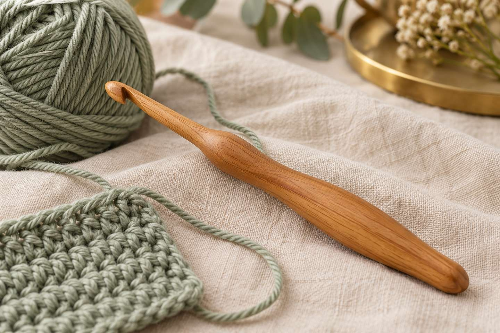

6 Essential Crochet Tools That Make Crocheting Easier

In short
Besides yarn and a hook, six small tools help the most: stitch markers, a blunt tapestry needle, small sharp scissors, a tape measure (ideally with a gauge ruler), a row counter and – if your hand gets sore – an ergonomic hook. Most are inexpensive, and there's a household swap for almost all of them. Below you'll find what each tool is for, plus a checklist to tick off.
When you start out, all you really need to crochet is yarn and a hook. But by your first amigurumi or first blanket you'll notice that a few little helpers save a lot of counting, searching and frogging. In this post I'll introduce the six tools I find most useful – no brand promotion, and with simple alternatives in case you don't want to buy anything yet.
Which 6 crochet tools do you really need?
| Tool | What it's for | Swap from home |
|---|---|---|
| 1. Stitch markers | Mark the start of a round or key stitches | Paper clip, safety pin, scrap of contrast yarn |
| 2. Blunt tapestry needle | Weave in ends, sew pieces together | – (a sharp sewing needle splits the yarn) |
| 3. Small sharp scissors | Cut yarn cleanly | Any small sharp scissors |
| 4. Tape measure / gauge ruler | Check gauge and size | Ruler, folding rule |
| 5. Row counter | Keep track of rows and rounds | Tally marks or the PrettyCrochet stitch counter |
| 6. Ergonomic hook | A more relaxed grip on long projects | Build up the handle with foam or polymer clay (try it out) |
1. Stitch markers: where does the round start?

A stitch marker is a small clip that marks a stitch so you can find your place in a project (see sources). It matters most when you crochet in a spiral, as with amigurumi: without a marker, the start of the round is easy to lose. Place the marker in the first stitch of each round and move it up as you go.
Tip: Choose locking markers that open and close. Closed rings (the kind knitters use) can't be removed from a crochet stitch afterwards.
2. Blunt tapestry needle: invisible ends

With a tapestry needle (also called a yarn needle) you weave in ends and sew pieces together – ears onto an amigurumi, for example, or granny squares to each other. The key is the blunt tip: it slips between stitches instead of splitting the yarn. They come in metal or plastic; versions with a slightly bent tip make it easier to get under worked stitches (see sources).
3. Small sharp scissors: clean, not frayed

Next to yarn and a hook, a good pair of scissors is one of the most important crochet tools – as long as they're sharp (see sources). Dull scissors crush the yarn, so the ends fray and are harder to thread. Small scissors also fit in any project bag. Always leave a tail of about 4–6 in (10–15 cm) so you can still weave it in.
4. Tape measure and gauge ruler: is the size right?

A tape measure tells you whether a hat, wrist warmers or blanket is turning out the right size – and it's how you measure your gauge swatch. A gauge ruler is handy too: a small ruler with a window for counting stitches over 4 in (10 cm). Many also have hook-size holes so you can identify an unlabeled hook.
Your yarn label tells you which hook to use. As a rough guide, the US industry group Craft Yarn Council gives these ranges:
| Yarn weight (category) | Common names | Hook (guideline) |
|---|---|---|
| 3 – light | DK, light worsted | 4.5–5.5 mm |
| 4 – medium | Worsted, aran | 5.5–6.5 mm |
| 5 – bulky | Chunky, bulky | 6.5–9 mm |
5. Row counter: never lose count again

A row counter helps you keep track of which row or round of the pattern you're on – especially on big projects like blankets (see sources). The classic is a small clicker or a twist-ring counter. A free alternative is the stitch counter here on PrettyCrochet: it runs in your browser, counts rows with a tap and remembers your place on your device.
Tip: Always count at the same moment – for example right after the last stitch of a round. That way you'll know exactly where you are even after a break.
6. Ergonomic hook: when your hand gets tired

Ergonomic hooks have a thicker, often padded or contoured handle. According to the crochet blog I Can Crochet That, they're designed to fit more comfortably in your hand and spread pressure more evenly, so you don't need to grip as tightly. Regular hooks are fine for short sessions, the blog says, but can strain fingers and wrists if you hold them tightly (see sources).
Your grip matters as much as the hook: hold yarn and hook loosely and take short breaks – the blog suggests a 20-second break every 20 minutes. I show you how to hold hook and yarn in the crochet basics.
Checklist: what goes in your project bag?
- Yarn and a matching hook (see the label)
- 4–5 locking stitch markers
- 1–2 blunt tapestry needles
- Small sharp scissors
- Tape measure or gauge ruler
- Row counter – or your phone with the stitch counter
- Printed or saved pattern
Not sure which yarn to start with? Read the best yarn for crochet beginners. You'll find every abbreviation in the abbreviations guide.
More for learning to crochet
Just starting out? The learning path walks you through the basics step by step. Ready for a bigger project? Try the granny square blanket – stitch markers, tapestry needle and counter all come in handy there. Design your own patterns with the pattern generator.
What about you? Which tool could you never crochet without? Tell me on Instagram or TikTok! 🧶
Frequently asked questions about crochet tools
What crochet tools do I need as a beginner?
To start, yarn, a matching hook, a blunt tapestry needle and sharp scissors are enough. Stitch markers and a row counter make counting easier – and at first a paper clip or a scrap of contrast yarn works fine as a stitch marker.
What can I use instead of stitch markers?
A paper clip, a small safety pin or a short scrap of contrast yarn pulled through the stitch. All that matters is that you can remove it again.
Why do I need a blunt tapestry needle?
The blunt tip slips between stitches instead of splitting the yarn, so your woven-in ends stay neat and your fabric looks tidy.
Which crochet hook goes with my yarn?
Check the yarn label. As a guideline, the Craft Yarn Council suggests 4.5–5.5 mm for light (DK) yarn, 5.5–6.5 mm for medium (worsted/aran) yarn and 6.5–9 mm for bulky yarn. For firm amigurumi, people often go down a hook size.
Do ergonomic crochet hooks help with hand pain?
They have a thicker, padded handle so you don't need to grip as tightly, and many people find them more comfortable. A relaxed grip and regular short breaks matter just as much. If pain persists, please see a doctor.